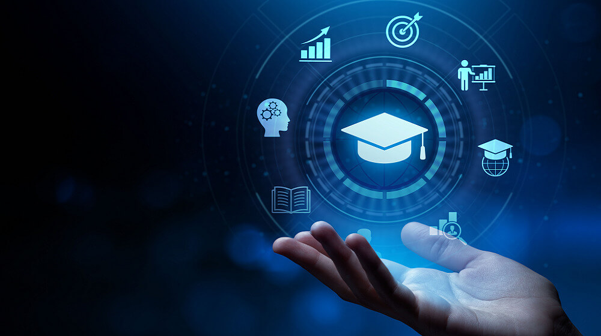
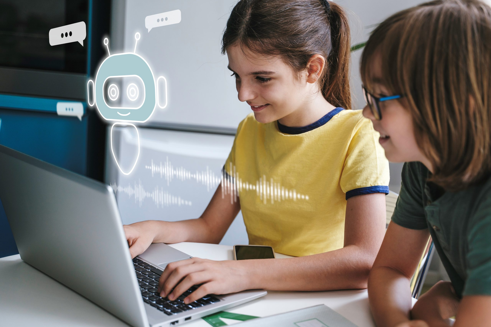

El impacto de la IA en la educación
La aparición de la inteligencia artificial en la educación ha desencadenado un gran debate, convirtiéndose en un
tema de discusión tanto en ámbitos académicos como en la formación para empresas. El uso de la IA en la
educación está transformando radicalmente los procesos de enseñanza-aprendizaje, generando tanto entusiasmo como
preocupación entre educadores, estudiantes y organizaciones.
Algunos ven la IA en la educación como una amenaza para los métodos tradicionales de enseñanza, mientras que
otros la consideran una oportunidad para adaptar nuestras metodologías educativas a la realidad actual. Esta
tecnología no debe ser vista como un rival, sino como una herramienta poderosa que, si se utiliza correctamente,
puede enriquecer y transformar la experiencia de aprendizaje, preparándonos para un futuro tecnológicamente
avanzado.

Desventajas y ventajas
Ventajas:
Aprendizaje personalizado.La inteligencia artificial permite crear experiencias de aprendizaje usando los datos obtenidos del usuario y asi adaptarse a sus necesidades individuales, obteniendo un enfoque mas efectivo y centrado al estudiante. La IA puede darte niveles o un progreso de como va el estudiante con el objetivo de motivar o incitar a que el estudiante siga aprendiendo como si fuera un videojuego el cual lo hablare en el siguiente parrafo.
Motivacion y capacidad de aprendizaje.incrementar la capacidad de aprendizaje de los estudiantes, aportando nuevas herramientas de gamificación y entornos de aprendizaje interactivos a las aulas. Los sistemas gamificados basados en IA pueden adaptar los desafíos al nivel exacto de cada estudiante, manteniendo el equilibrio perfecto entre dificultad y logro que mantiene a los alumnos comprometidos y motivados.
Beneficia a los educadores.La IA beneficia a los educadores reduciendo la carga de trabajo al usar la IA para hacer planificaciones de aprendizaje, cuestionarios interactivos,etc. Tambien ayuda a monitorear el progreso y seguimiento del aprendizaje de los alumnos.
Desventajas:
Dependencia tecnológica.El uso excesivo de la IA puede provocar a reducir el pensamiento crítico haciendo que los jovenes no puedan pensar por si mísmo haciendo que siempre recurran a la IA para solucionar problemas tanto lo lógico, como lo fisico.
Privacidad y seguridad de datos.La IA recopila informacion y datos para seguir y adaptarse al progreso de aprendizaje del alumno. La información recopilada no está tan protegida como nosotros pensamos. Es información sensible que debe ser protegida rigurosamente contra accesos no autorizados, y su uso debe estar claramente regulado y limitado a propósitos educativos legítimos.
Pero, más allá de esta serie de ventajas y desventajas de la IA en la educación, lo que es innegable es que la incorporación de esta tecnología está cambiando radicalmente los procesos de aprendizaje.